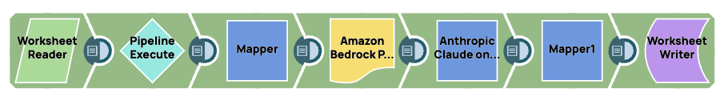
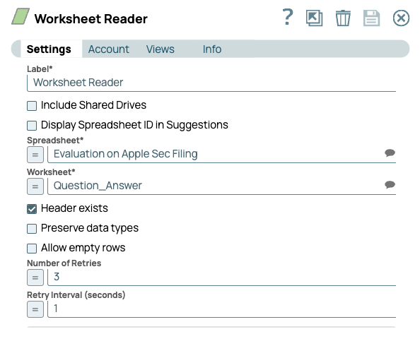
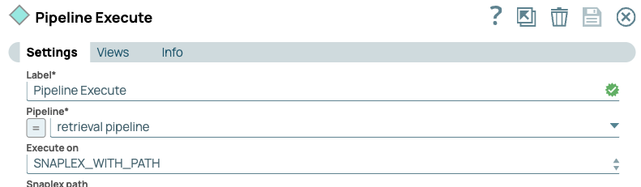
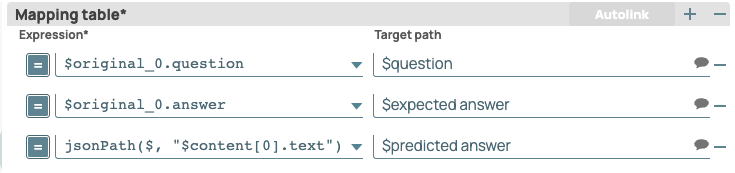
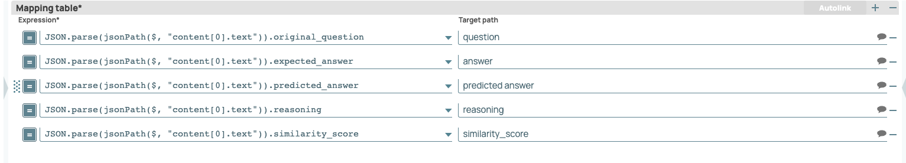
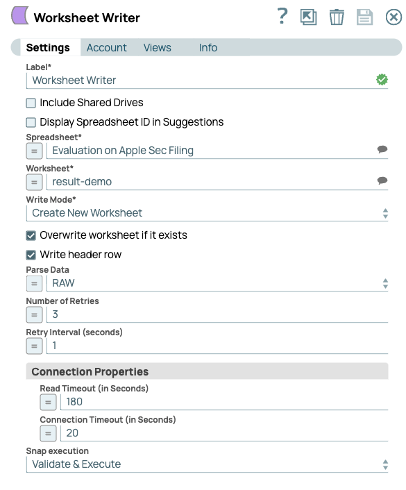
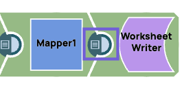
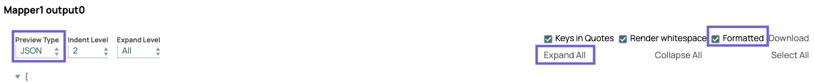
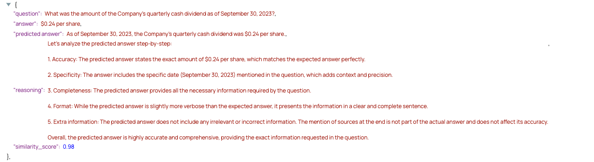
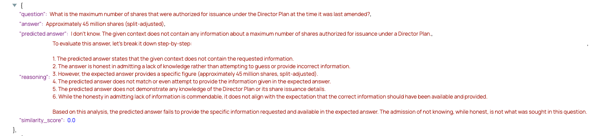

Build an evaluation pipeline for LLM applications
This tutorial explains how to assess the quality of your GenAI applications with our evaluation pipeline pattern.
Evaluation
The evaluation pattern pipeline provides instrumentation to measure the success rate of LLM applications. The evaluation pipeline scores the responses from retrieval pipelines for an LLM application. The objective is to get a sense of how well the LLM application is performing. The LLM application can be RAG retrieval pipelines, or other general GenAI workflows. We can use the scores to gauge the accuracy of the answer returned by the retrieval pipelines and get a more precise result compared to good vs. bad or A/B/C/D criteria because performance differences between different LLM pipelines can be subtle.
The resulting scores might also be used to improve the RAG sources or construction of the retrieval pipelines. We can use the score (and reasoning) to discover in which category this LLM application produces accurate responses, or to identify potential flaws in the design by checking the evaluation result to improve the LLM application. Over time, we might run this pipeline and review the LLM results periodically to ensure consistency and to avoid issues associated with model drift.
Pipeline pattern design
The Evaluation pipeline reads questions - text prompts - from a spreadsheet, then calls the retrieval pipeline with the Pipeline Execute Snap. The prompt is passed through the retrieval pipeline, then returned to the evaluation pipeline. The response is scored, and then the score is written to the the spreadsheet.

 Note: Our Public Pattern Library has two evaluation patterns, either of which you can download for this tutorial:
Note: Our Public Pattern Library has two evaluation patterns, either of which you can download for this tutorial:
- AgentCreator - Evaluation Pipeline - Azure OpenAI
- AgentCreator - Evaluation Pipeline - Amazon Bedrock Edition
What you need to complete this tutorial
- Indexer and retriever pipelines from the SEC use case.
- A CSV file spreadsheet with prompts and expected answers
- Evaluation pipeline
Workflow
Use the following workflow:
- Download and configure the indexer and retrieval pipelines needed for this tutorial.
- Upload the CSV file as a worksheet.
- Configure and run the evaluation pipeline. The pipeline will read and write answers to the sheet.
- Review the results of the evaluation via the spreadsheet.
Set up to follow the tutorial
In this tutorial, the evaluation pipeline writes the scores to a worksheet. Alternatively, we can use the
We can perform the steps in this tutorial with any AgentCreator set of pipelines. If you already have a set of indexer and retriver pipelines to use, you can download the evaluation pipeline .
- Navigate to the Public Pattern Library. Note: The Public Pattern Library has multiple
variations of these pipeline patterns. We can leverage any one of these patterns as long
as we have a indexer, retriever, and evaluation pipeline.
- Navigate to the folder with the downloaded patterns, and open the pipelines in SnapLogic Designer.
Set up control data
Before you run pipelines, create a control data set for your evaluation pipeline to reference.
- In a spreadsheet, enter a number of prompts for the LLM to process.
- For each prompt, enter the expected answer.
- Depending on the type of file format, save the spreadsheet.
- For our tutorial, we can upload the spreadsheet to Google Spreadsheets.
 Tip: Our evaluation pattern uses Worksheet Snaps to read the spreadsheet and write the LLM responses
to the same spreadsheet. Alternatively, we can use a CSV file, upload it to Manager, then replace the
Worksheet Reader and Writer Snaps with File Reader and Writer Snaps.
Tip: Our evaluation pattern uses Worksheet Snaps to read the spreadsheet and write the LLM responses
to the same spreadsheet. Alternatively, we can use a CSV file, upload it to Manager, then replace the
Worksheet Reader and Writer Snaps with File Reader and Writer Snaps.
Configure and run the evaluation pipeline
Navigate to the evaluation pattern pipeline.
- Let's configure the pipeline to read from our spreadsheet using the Worksheet Reader.

- Next we use the Pipeline Execute Snap to call our Retrieval pipeline.

- After the retrieval pipeline runs, we need to map the responses:

- We then use the Amazon Bedrock Prompt Generator Snap to read each mapped field.
- In the Settings dialog, set the Prompt field to Context Q & A
- Click Edit Prompt and add the following text:
You are an expert professor specialized in grading students' answers to questions. Please only output the results in JSON format as follows: { "original_question": xxx, "expected_answer": xxx, "predicted_answer": xxx, "reasoning": xxx, "similarity_score": xxx } You are grading the following question: {{question}} Here is the expected answer. Please always compare with the expected answer that I offer below: {{expected answer}} You are grading the following predicted answer: {{predicted answer}} It is okay that the predicted answer could contain extra information like the sources for related context. Use step-by-step reasoning to grade the answer. Be very critical. Write your reasoning before you grade the answer. You must include a similarity score between the expected answer and the predicted answer after the reasoning even though you do not agree with the expected answer! Please give a similarity score in decimal format and from 0 to 1.
- In the Anthropic Claude on AWS Messages Snap, set the model in the Model name* field, then enter $prompt in the Prompt field.
- In the downstream Mapper Snap, map the fields from the prompt to those found in the spreadsheet.

- Finally, configure the Worksheet Writer Snap to write to our scoring sheet:

Review the results
- Validate Evaluation pipeline.
- Open the Data Preview of the Mapper Snap before the Worksheet Writer.

- From the dropdown on the top left, select JSON, then click Expand all and select Formatted. Our preview shows the following:

- Review the scores and reasoning given for each prompt.
- The following response receives a high score, but note that it isn't a perfect score:

- This prompt receives a low score. Note the reasoning shows that the LLM application fails to provide an answer:

- The following response receives a high score, but note that it isn't a perfect score:
Further steps
Upon completion of this tutorial, you can use the evaluation pattern to analyze the effectiveness of your RAG pipelines and LLM apps.